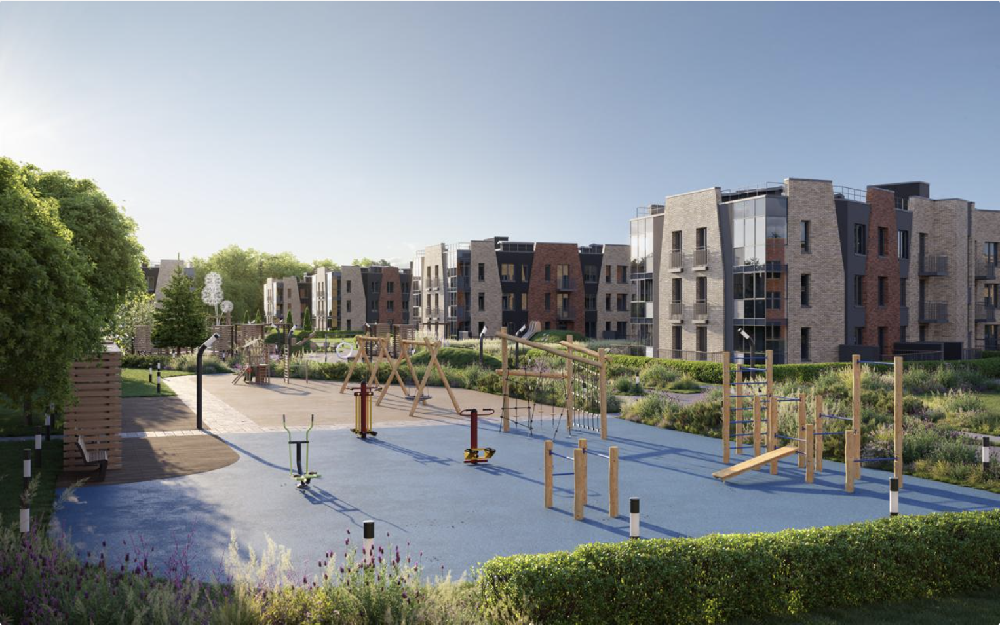
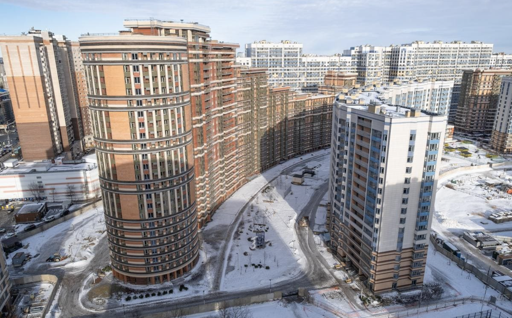
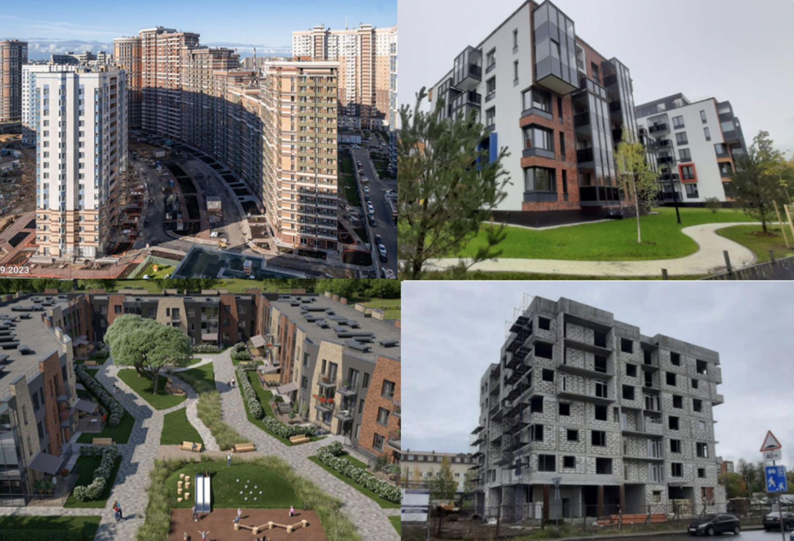
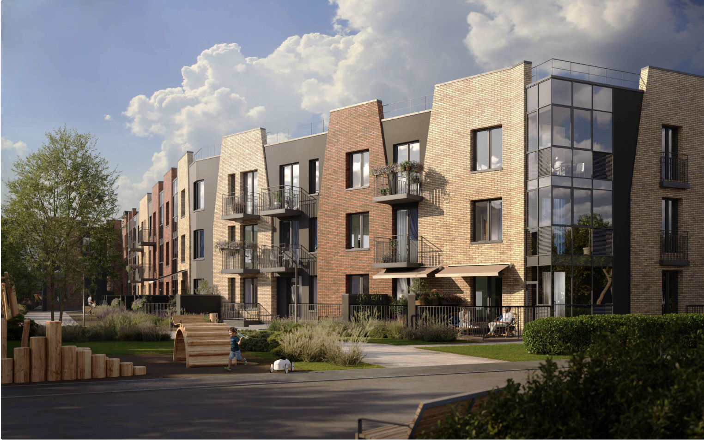
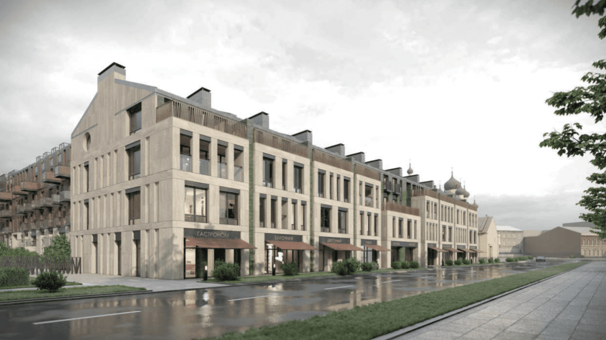
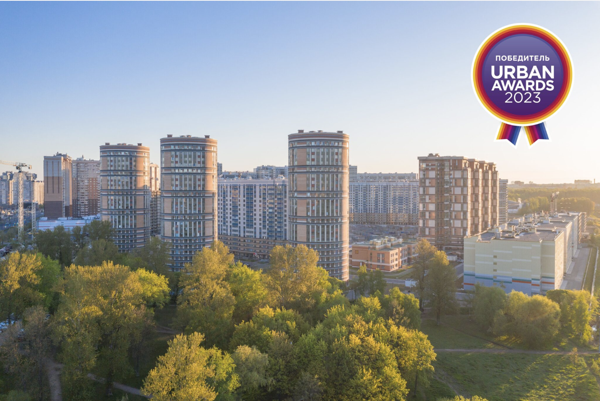

Итоги работы компании «Охта Групп» в 1 квартале 2024 года
СРЕДА, 24 АПРЕЛЯ 2024
В первом квартале в проектах компании проведены сделки на общую сумму более 1,6 млрд. рублей. В «Приморском квартале» (реализуется в рамках партнерства двух девелоперских компаний - «Мегалит» и «Охта Групп») сумма по заключенным договорам составила 922 млн руб.
Введены в эксплуатацию первые 3 очереди, сданы 2 корпуса на 1 394 квартиры в финальной 4-й очереди. В завершающем корпусе ведется подготовка к вводу в эксплуатацию
В Петрозаводске, в рамках проекта «Петровская слобода», продолжается работа над несколькими жилыми комплексами. В ЖК «Речка» реализованы все квартиры и коммерческие помещения. Сумма по заключенным в 1 квартале 2024 г. договорам составила около 7 млн. руб.
В ЖК «Дом на Казарменской» выполняются работы по монтажу внутренних инженерных сетей. С января по апрель проданы 4 квартиры и 4 кладовые на сумму около 28 млн руб. В проекте реализовано 42% квартир,
В ЖК «Речка-2» завершаются работы по возведению монолитного каркаса. Ведется монтаж наружных стен и внутренних перегородок. Начаты работы по внутренним инженерным сетям. На апрель 2024 года продано 29% квартир, из них 13 квартир и 4 кладовые на 150 млн руб. реализованы в первом квартале
В ЖК «Экография», расположенном недалеко от Петергофа, ведутся монолитные работы в двух корпусах первой очереди. В проекте продано 6% квартир, в первые месяцы года – 34 квартиры и 29 кладовых на сумму около 270 млн руб.,
Завершаются согласования проекта реконструкции одного из корпусов «Скорохода» в апарт-отель. Ведется подготовка к старту продаж. Заключен договор купли-продажи здания общей площадью около 3 400 кв.м. Сумма сделки – 255 млн руб.
ОПУБЛИКОВАНО В ИНВЕСТОРАМ, НОВОСТИ
TAGGED UNDER: ИТОГИ КВАРТАЛА, ОХТА ГРУПП

Старт продаж в жилом квартале “Экография”
ПОНЕДЕЛЬНИК, 15 АПРЕЛЯ 2024
«Охта групп» вывела в продажу два корпуса (почти 10 тыс. м2) малоэтажного жилого комплекса «Экография» недалеко от Петергофа.Каждый из корпусов жилого комплекса будет назван в честь великих русских литераторов, воспевавших природу. Так, корпус 1 получил имя «Паустовский», а корпус 6 — «Тургенев». Каждая парадная с индивидуальным авторским оформлением.
ОПУБЛИКОВАНО В НОВОСТИ
TAGGED UNDER: КВАРТАЛ У ПЕТЕРГОФА, ОХТА ГРУПП, ЭКОГРАФИЯ

Заселение предпоследних домов в ЖК «Приморский квартал» начнется в апреле
ПОНЕДЕЛЬНИК, 11 МАРТА 2024
В “Приморском квартале” сданы корпуса 41 и 42. Заселение стартует с 1 апреля 2024 г. Пожалуй, это лучшая новость для дольщиков и покупателей! Передача квартир и ключей дольщикам начнется досрочно – заселение стартует 1 апреля. 07 марта 2024 года служба государственного надзора и экспертизы Санкт-Петербурга выдала Разрешения на ввод в эксплуатацию
«Охта Групп» подвела итоги работы в 4 квартале 2023 года
ПОНЕДЕЛЬНИК, 29 ЯНВАРЯ 2024
С октября по декабрь 2023 года в проектах компании проведены сделки на общую сумму более 4 млрд. рублей. В проекте «Приморский квартал» (реализуется в рамках партнерства двух девелоперских компаний - «Мегалит» и «Охта Групп») сумма по заключенным в IV квартале договорам составила 3,4 млрд руб., продано 249 квартир, 2 коммерческих помещения и 60 машиномест.
ОПУБЛИКОВАНО В ИНВЕСТОРАМ, НОВОСТИ
TAGGED UNDER: ИТОГИ КВАРТАЛА, ОХТА ГРУПП
В Петербурге вырос спрос на подготовленные проекты
ЧЕТВЕРГ, 16 НОЯБРЯ 2023
Заместитель председателя правления “Охта Групп” Михаил Ривлин рассказал “Деловому Петербургу” о продаже нескольких проектов и планах по дальнейшему развитию компании. “Мы “перетряхиваем” свой портфель. Два года назад нами было принято решение об определённой экспансии, и мы вошли сразу в достаточно большое количество проектов, как минимум в восемь.
ОПУБЛИКОВАНО В ИНВЕСТОРАМ, НОВОСТИ
TAGGED UNDER: МИХАИЛ РИВЛИН, ОХТА ГРУПП

Результаты работы «Охта Групп» в третьем квартале 2023 года
ПОНЕДЕЛЬНИК, 16 ОКТЯБРЯ 2023
В третьем квартале 2023 года в проектах компании заключено сделок на общую сумму почти 3,5 млрд рублей, кредитный рейтинг «Охта Групп» изменен на «позитивный», а третий выпуск облигаций размещен в полном объеме. В проекте «Приморский квартал» (реализуется в рамках партнерства двух девелоперских компаний - «Мегалит» и «Охта Групп») продано 245 квартир, 4 коммерческих помещения
ОПУБЛИКОВАНО В ИНВЕСТОРАМ, НОВОСТИ
TAGGED UNDER: ИТОГИ КВАРТАЛА, ОХТА ГРУПП

Стартовал новый проект «Охта Групп» — малоэтажный жилой комплекс у Петергофа
ПЯТНИЦА, 06 ОКТЯБРЯ 2023
Девелоперская компания «Охта Групп» открыла продажи квартир в первой очереди нового малоэтажного жилого квартала в непосредственной близости от Петергофа — «ЭКОГРАФИЯ». Малоэтажный жилой квартал общей площадью около 54 тыс. кв. м возведут в 5 минутах от Петергофа – одной из самых экологически чистых локаций Петербурга.
ОПУБЛИКОВАНО В НОВОСТИ
TAGGED UNDER: ОХТА ГРУПП, ЭКОГРАФИЯ

Компания “Охта Групп” поделилась итогами работы во втором квартале 2023 года
ПОНЕДЕЛЬНИК, 24 ИЮЛЯ 2023
В начале июня компания опубликовала консолидированную отчетность по МСФО за 2022 г.: выручка группы выросла до 6,4 млрд руб. (+64% г/г), EBITDA составила 2,1 млрд руб. (+166% г/г), скорректированный долг /EBITDA составил 1,54x. Проекты продолжают активно развиваться. В «Приморском квартале» первые 3 очереди введены в эксплуатацию, суммарно продан 81% квартир.
ОПУБЛИКОВАНО В ИНВЕСТОРАМ, НОВОСТИ
TAGGED UNDER: ИТОГИ КВАРТАЛА, ОХТА ГРУПП

«Приморский квартал» снова признан лучшим жилым комплексом комфорт-класса
ПЯТНИЦА, 02 ИЮНЯ 2023
Объединенный застройщик «Мегалит – Охта Групп» стал финалистом сразу в 5 номинациях престижной федеральной премии в сфере недвижимости Urban Awards. Компания вошла в ТОП-10 финалистов номинации «Девелопер Года» на федеральном уровне, а в номинации «Жилой комплекс года комфорт-класса» по Петербургу «Приморский квартал» одержал уверенную победу.
О проекте «Мытный двор», который способен изменить тональность целого квартала, рассказали на онлайн-дискуссии «Стартуют в 2023: новые девелоперские проекты», организованной отделом конференций РБК Петербург совместно с проектом Retrogradu.net. В территории «Мытного двора» компания «Охта Групп» видит потенциал места. «Очевидно, что сейчас это аварийная зона, какие-то заброшенные склады, стоянки, а место само шикарное.